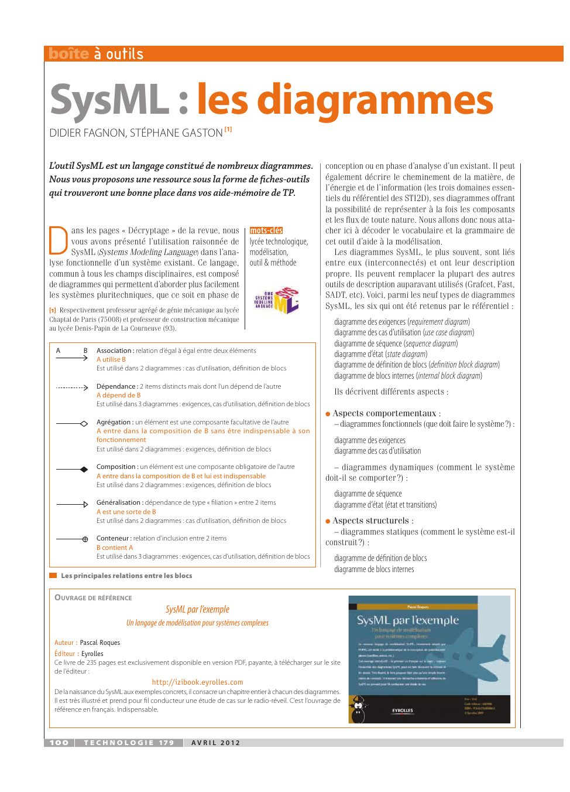
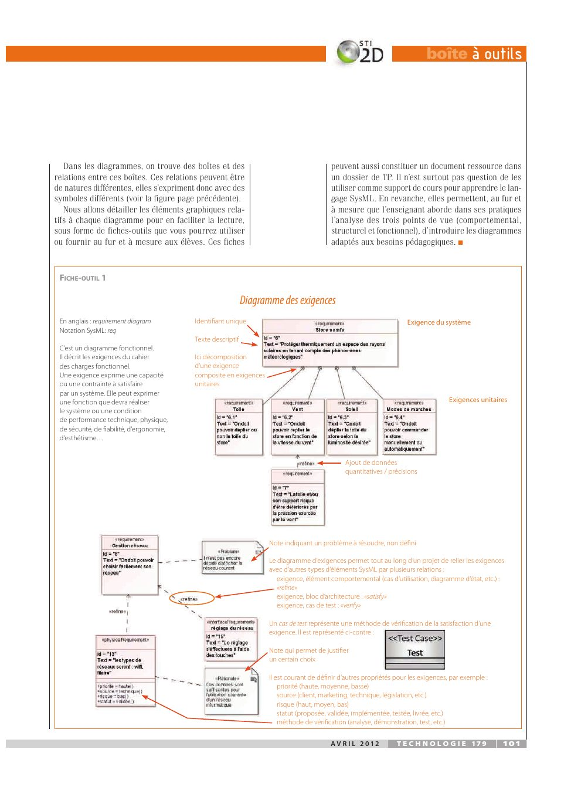
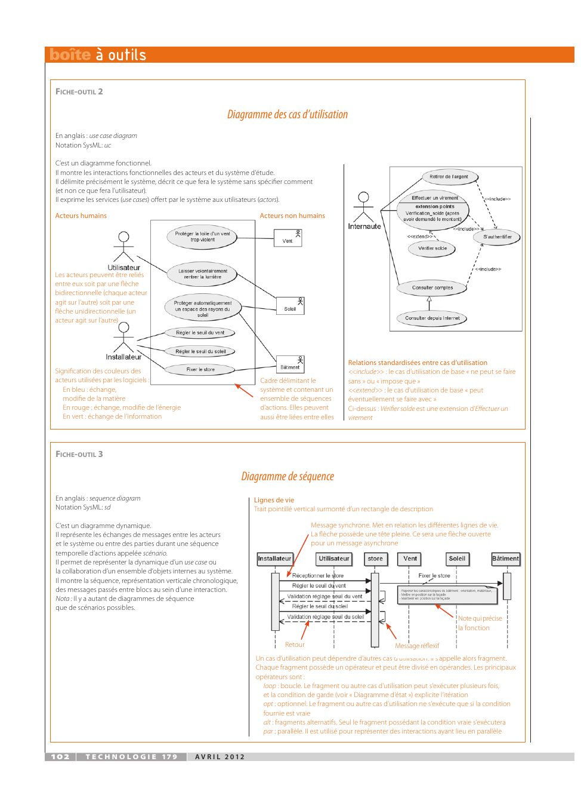
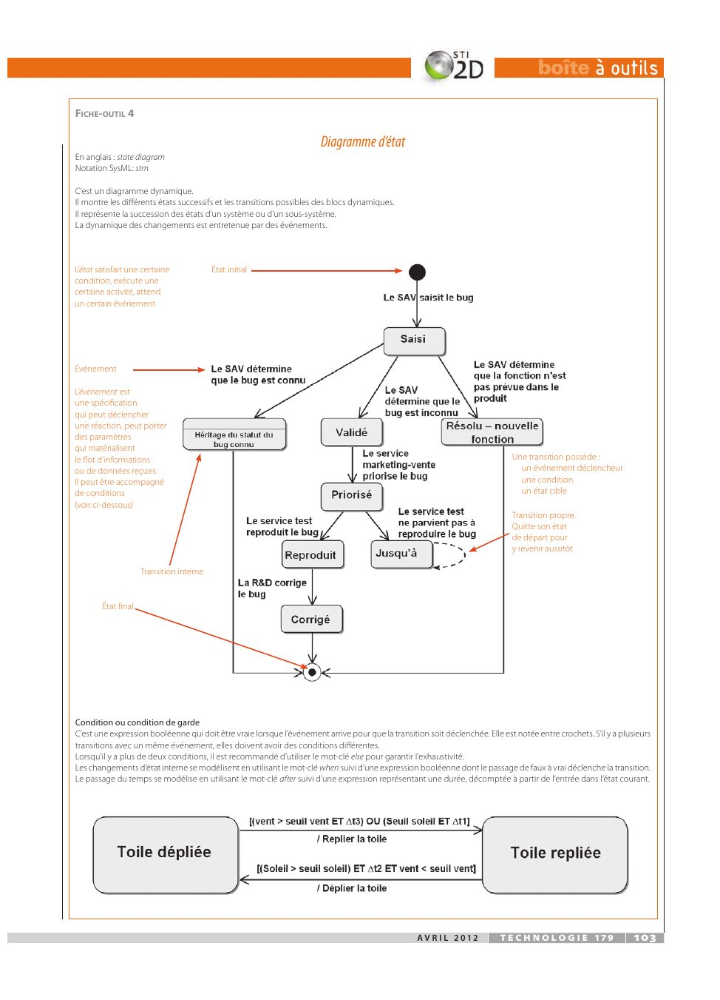
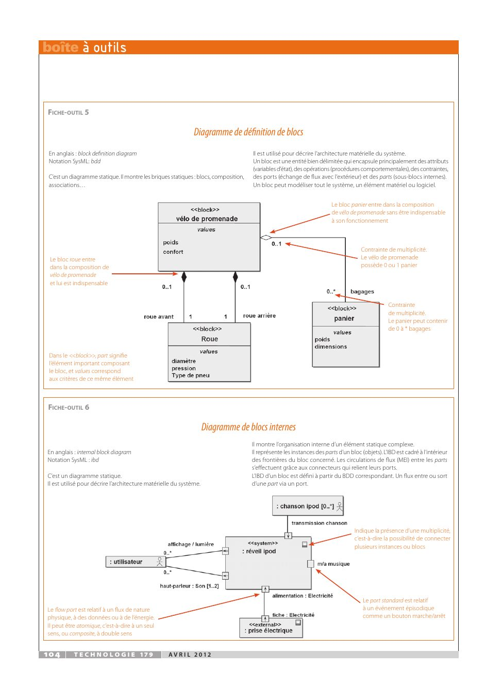

Accueil · Annexe documentaire
Annexe documentaire
SysML : les diagrammes.
Six fiches pour lire et dessiner les diagrammes du projet. Chaque fiche tient sur un écran et son exemple porte sur la station iPod.
Adapté de « SysML : les diagrammes », Didier Fagnon et Stéphane Gaston, Technologie n° 179, avril 2012, pages 100 à 104.
Quel diagramme pour quelle question ?
À l'étape 3, le sujet demande le diagramme de contexte, le diagramme des cas d'utilisation et le diagramme des exigences. Les autres servent pour aller plus loin.
Le diagramme de contexte n'est pas détaillé dans cette annexe. Il place la station au centre, avec autour d'elle les acteurs et les éléments de son environnement. Pour la syntaxe des blocs, voir les fiches 5 et 6.
Exigences, cas d'utilisation.
Séquence, état.
Définition de blocs, blocs internes.
Les relations entre les éléments
Les mêmes symboles reviennent dans plusieurs diagrammes. Lisez toujours de A vers B.
Cas d'utilisation, blocs
Exigences, cas d'utilisation, blocs
Exigences, blocs
Exigences, blocs
Cas d'utilisation, blocs
Exigences, cas d'utilisation, blocs
Les six fiches
Les deux premières sont ouvertes. Touchez un titre pour ouvrir ou fermer une fiche.
Fiche 1Diagramme des exigencesreqDemandé dans le projet
Il liste ce que la station doit faire et les contraintes qu'elle doit respecter. C'est votre cahier des charges, mis en forme.
À retenir
- Une exigence est une capacité ou une contrainte : fonction, performance, sécurité, fiabilité, ergonomie, esthétique.
- Chaque cadre porte un identifiant unique (Id) et un texte.
- Une exigence composite se découpe en exigences unitaires, reliées par le symbole conteneur.
- Une exigence peut être reliée à autre chose :
refinevers un cas d'utilisation ou un état,satisfyvers le bloc qui la réalise,verifyvers le test qui la vérifie. - On peut ajouter une priorité, une source, un risque, un statut ou une méthode de vérification.
Avant de rendre
- Chaque exigence a un identifiant différent des autres.
- Le critère est écrit (compacte, 1 ou 2 HP, prise jack 3.5mm…).
- On sait comment vérifier chaque exigence : c'est l'objet de l'étape 6.
Document original : page 101.
Fiche 2Diagramme des cas d'utilisationucDemandé dans le projet
Il montre qui utilise la station et quels services elle rend, sans dire comment elle les rend.
À retenir
- Un cadre délimite le système. Les acteurs sont dehors, les services (ellipses) sont dedans.
- Un cas d'utilisation décrit ce que fait le système, pas ce que fait l'utilisateur.
- Les acteurs humains sont des bonshommes, les acteurs non humains des rectangles.
- Dans certains logiciels, la couleur d'un acteur indique ce qu'il échange : bleu pour la matière, rouge pour l'énergie, vert pour l'information.
include: le cas de base ne peut pas se faire sans l'autre.extend: il peut se faire avec, mais ce n'est pas obligatoire.
Avant de rendre
- Le cadre porte le nom de la station.
- Chaque cas d'utilisation est un service rendu par la station.
- Les flèches
includeetextendsont orientées comme dans l'exemple : de la base vers l'inclus, de l'extension vers la base.
Document original : page 102.
Fiche 3Diagramme de séquencesdPour aller plus loin
Il montre dans quel ordre les messages s'échangent entre l'utilisateur, la station et l'iPod pendant un scénario.
À retenir
- Le temps descend de haut en bas.
- Chaque acteur ou bloc a une ligne de vie : un trait pointillé sous un rectangle.
- Flèche à tête pleine : message synchrone. Flèche ouverte : message asynchrone. Flèche pointillée : retour.
- Un bloc peut s'envoyer un message à lui-même (message réflexif).
- Il faut un diagramme par scénario possible.
- Fragments :
looprépète,optest facultatif,altchoisit entre plusieurs possibilités,parfait en parallèle.
Avant de rendre
- Un seul scénario par diagramme.
- Les messages sont dans l'ordre chronologique, de haut en bas.
Document original : page 102.
Fiche 4Diagramme d'étatstmPour aller plus loin
Il décrit les états successifs d'un bloc et les événements qui font passer de l'un à l'autre.
À retenir
- Début : un point plein. Fin : un cercle cible.
- Une transition indique l'événement déclencheur, une éventuelle condition et l'état cible.
- La condition de garde s'écrit entre crochets. Si plusieurs transitions partent du même événement, leurs conditions doivent être différentes. Le mot
elsecouvre les autres cas. when: se déclenche quand une expression passe de faux à vrai.after: se déclenche après une durée passée dans l'état.- Transition propre : l'état est quitté puis retrouvé aussitôt. Transition interne : on reste dans l'état.
Avant de rendre
- Chaque flèche porte un événement.
- Il y a un seul état initial.
Document original : page 103.
Fiche 5Diagramme de définition de blocsbddPour aller plus loin
Il décrit de quoi est faite la station : ses blocs et la façon dont ils s'assemblent.
À retenir
- Un bloc est une entité délimitée : tout le système, une pièce, ou un élément logiciel.
- Il peut contenir des attributs, des opérations, des contraintes, des ports et des parts. Dans
block, part désigne les éléments importants et values leurs critères. - Composition (losange plein) : le bloc est indispensable. Agrégation (losange vide) : il est facultatif.
- La multiplicité se note près du bloc :
1,0..1,1..2,0..*.
Avant de rendre
- Chaque lien a le bon losange.
- Les multiplicités sont cohérentes avec le cahier des charges.
Document original : page 104.
Fiche 6Diagramme de blocs internesibdPour aller plus loin
Il montre comment les pièces d'un bloc sont reliées et ce qui circule entre elles : matière, énergie, information.
À retenir
- Il se dessine dans le cadre du bloc étudié, à partir du diagramme de définition de blocs.
- Les flux passent par des connecteurs reliés à des ports.
- Port de flux : flux physique, données ou énergie. À un seul sens, il est atomique ; à double sens, il est composite.
- Port standard : événement ponctuel, comme un bouton marche/arrêt.
- Une multiplicité indique qu'on peut connecter plusieurs instances.
Avant de rendre
- Chaque connecteur relie deux ports.
- La nature du flux est écrite sur le connecteur.
Document original : page 104.
Le document original
Pour les schémas complets de la revue, ouvrez le PDF. Les pages sont aussi dans images/.

images/annexe-sysml-p-1.jpgPage 1 sur 5 de « SysML : les diagrammes »
images/annexe-sysml-p-2.jpgPage 2 sur 5 de « SysML : les diagrammes »
images/annexe-sysml-p-3.jpgPage 3 sur 5 de « SysML : les diagrammes »
images/annexe-sysml-p-4.jpgPage 4 sur 5 de « SysML : les diagrammes »
images/annexe-sysml-p-5.jpgPage 5 sur 5 de « SysML : les diagrammes »Ouvrage de référence cité par les auteurs : « SysML par l'exemple », Pascal Roques, Eyrolles.